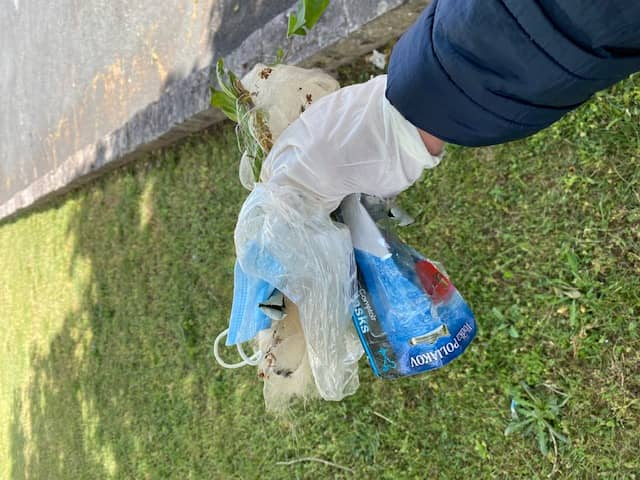
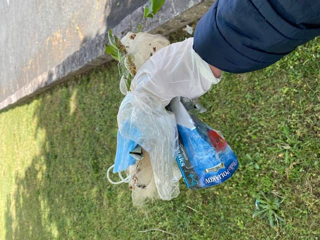

Un appel à l’aide
Tout a commencé par un simple appel à l’aide sur les réseaux sociaux charentais, le 1er mars 2021 : "Cherche des personnes rapidement, afin de nettoyer un lieu en pleine nature pollué par des déchets." 4 jours plus tard, 13 personnes insurgées et déterminées répondaient à l'appel. 1 tonne et demie de déchets en tout genre furent ramassés et triés. Le groupe "Les Insurgés des déchets" était né !
Un double objectif
Nos intentions sont de sensibiliser un maximum de monde pour leur faire prendre conscience du problème de ces incivilités du quotidien (un masque par terre, un ticket de caisse qu’on balance en sortant du magasin, un mégot par la fenêtre de sa voiture, une canette jetée dans un buisson, des gravats abandonnés dans la forêt…) et de préserver nos écosystèmes en passant un moment humain et convivial.
Sensibiliser et faire naître des vocations
La nouvelle génération est sensible et a du bon sens. Un déchet n’a rien à faire par terre, les poubelles existent et le tri sélectif aussi. En ramassant devant les enfants et adolescents, on leur montre l'exemple. C’est à nous adultes, parents, milieux scolaires et éducatifs de leur enseigner. En ramassant avec eux, ils deviennent acteurs/trices, et ils se sentent dotés de supers pouvoirs, celui de protéger la nature. Il faut être fier de chaque geste dans cette direction, LA bonne direction.


 
